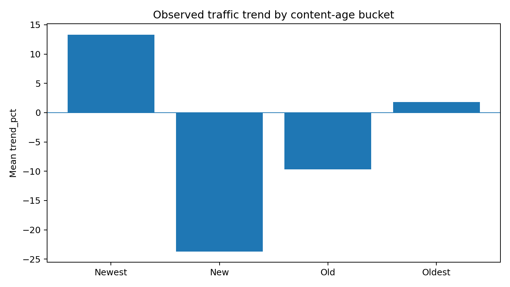
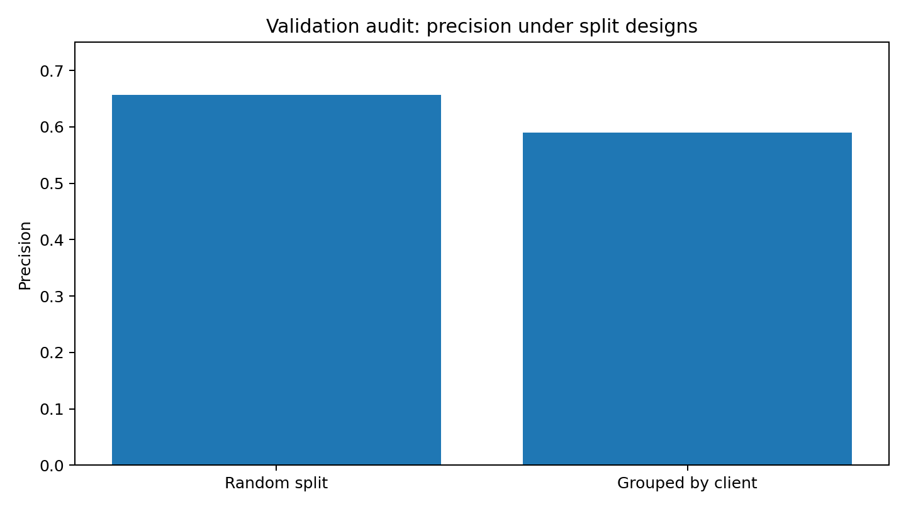
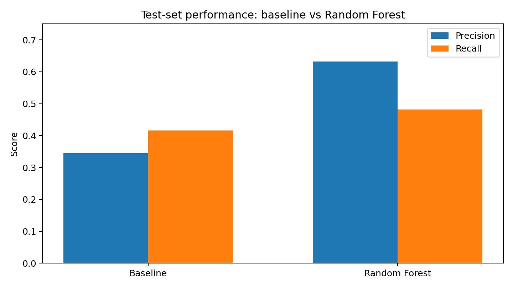
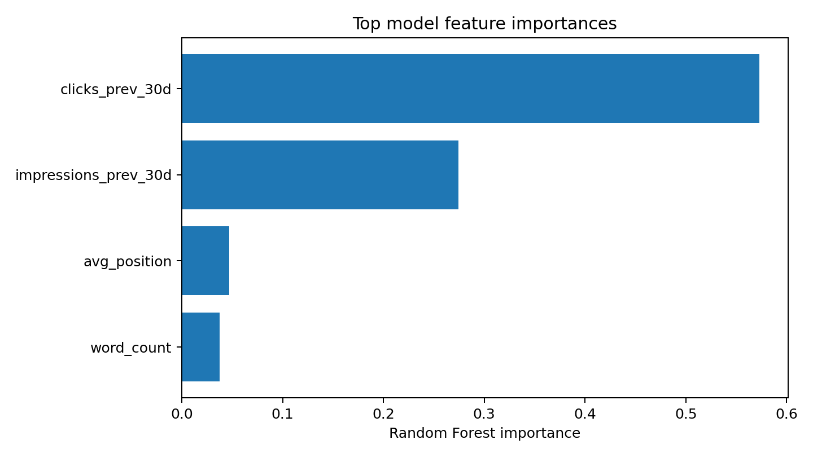

Predicting Content Refresh Opportunities from Historical Search Performance Signals
Lane: Refresh / Content Opportunity Scoring
Decision supported: prioritize pages for editorial review using historical search-performance patterns.
Abstract
This capstone asks whether historical search-performance and content attributes can be used to prioritize pages experiencing severe traffic decay for editorial review. The workflow frames the task as scoring and ranking, defines a historical decay proxy, builds a Random Forest model, and compares it with a transparent baseline rule. On the Week 5 test split, the Random Forest achieved 0.632 precision and 0.482 recall versus 0.345 precision and 0.416 recall for the baseline, while the Week 6 grouped validation reduced precision to 0.590 when client boundaries were respected. Historical clicks and impressions were the strongest reported model features, accounting for 0.573 and 0.274 importance respectively in the Week 5 model. The resulting queue is intended as directional decision-support for content prioritization, not as proof of ranking causes or a guarantee that rewriting will recover traffic.
1. Introduction / Problem Statement
Content teams have more pages to review than they can realistically update. A fixed rule such as “rewrite every page whose traffic falls by 20%” is blunt: the same percentage decline can mean very different things depending on historical volume, content age, competition, and search visibility.
The project therefore treats refresh prioritization as a scoring and ranking problem. The desired output is not merely a binary “decay / no decay” label, but an ordered queue that helps a content team decide what to review first.
2. Data
The supplied weekly notebooks use an anonymized FlyRank starter dataset loaded as content_refresh_anonymized.csv. The unit of analysis is one content page. The visible schema includes content and search attributes such as content age, word count, search volume, competition, CPC, impressions, clicks, CTR, average position, engagement-related fields, and traffic trend.
The modeling notebook uses the following eight features:
| Feature | Role |
|---|---|
| content_age_days | Content staleness / age signal |
| word_count | Content size |
| search_volume | Demand signal |
| competition | Competitive search signal |
| cpc | Keyword-value proxy |
| impressions_prev_30d | Historical visibility |
| clicks_prev_30d | Historical traffic |
| avg_position | Historical search position |
The Week 5 target proxy is severe recent traffic decay: clicks_last_30d < 0.8 × clicks_prev_30d, provided impressions_prev_30d > 100. The supplied notebooks describe this as a proxy rather than a causal “refresh success” label.
3. Methodology
3.1 Baseline action score
The Week 4 baseline flags a page when it is older than 180 days, has a traffic trend below −20%, and has more than 1,000 impressions over 90 days. Its reason code is decaying_historical_content and its action is refresh_content. The score weights the magnitude of negative trend by log-transformed impression volume.
The baseline produced 4,372 flagged rows in the supplied notebook run. The highest-scoring example had a score of 10.975, a −89.3% trend, 217,415 impressions over 90 days, and content age of 225 days.

Figure 1. Signal check reported in Week 4. The notebook's written verdict should be interpreted cautiously: the displayed bucket means do not show the “Oldest” bucket as the most negative; the “New” bucket is most negative in this run.
3.2 Random Forest model
The Week 5 model is a Random Forest Classifier with 100 trees, max_depth=10, and random_state=42. The original Week 5 split is an 80/20 stratified random split. Missing feature values are filled with zero.
The model was compared with the Week 4 baseline on the same test set. The primary reported metrics were precision and recall.
3.3 Validation and leakage audit
Week 6 adds an important generalization check by grouping the split by client_id, ensuring that clients in the test set are not seen in training. Precision decreased from 0.657 under the random split to 0.590 under the grouped split. This is a more conservative estimate of cross-client generalization than the random split.
The supplied audit reports no direct label leakage because the model features use historical columns while the target uses clicks_last_30d. It also identifies a remaining caveat: avg_position should be confirmed to represent only the historical feature window rather than an aggregate that reaches into the target period.

Figure 2. Precision before and after client-grouped validation.
4. Results
| Evaluation | Precision | Recall |
|---|---|---|
| Week 5 baseline | 0.345 | 0.416 |
| Week 5 Random Forest | 0.632 | 0.482 |
| Week 6 Random Forest, grouped by client | 0.590 | Not reported |

Figure 3. Reported test-set precision and recall from Week 5.
Relative to the Week 5 baseline, the Random Forest increased precision by 0.287 points and recall by 0.066 points. The grouped validation shows that precision falls when client boundaries are respected, reinforcing the need to report the conservative grouped result rather than relying only on the random split.
Feature importance

Figure 4. Top feature importances reported by the Week 5 Random Forest.
clicks_prev_30d had importance 0.5728 and impressions_prev_30d had importance 0.2743. avg_position and word_count followed at 0.0468 and 0.0377. These are model importance measures, not causal effects.
5. Ranked Recommendations / Action Playbook
Week 7 turns model probabilities into a content action queue. The documented intended action logic is:
| Action | Reason code | Documented criterion |
|---|---|---|
rewrite_full | severe_historical_decay_high_vol | Predicted decay probability > 0.7, age > 365 days, historical impressions > 10,000. |
refresh_metadata | click_drop_stable_impressions | Predicted decay with stable impressions, suggesting a metadata/snippet review. |
monitor | low_confidence_decay | Predicted decay probability between 0.5 and 0.7. |
The supplied Week 7 export contains 4,226 scored rows after filtering out no_action. The highest exported probability was 0.857947 for an anonymized content ID, followed by 0.851075 and 0.849710.
| Rank | Anonymous page | Probability | Exported action | Trend % | 90d impressions |
|---|---|---|---|---|---|
| 1 | content_910077c1bba4 | 0.857947 | rewrite_full | −2.2% | 902 |
| 2 | content_520c30e40873 | 0.851075 | rewrite_full | −1.8% | 1,300 |
| 3 | content_5fdd3001da55 | 0.849710 | rewrite_full | −6.7% | 376 |
| 4 | content_2557c1c418b6 | 0.846718 | rewrite_full | +20.5% | 724 |
| 5 | content_f9324da8eb1 | 0.844033 | rewrite_full | +23.8% | 716 |
refresh_metadata action, but the Week 7 export code actually maps only probability > 0.7 to rewrite_full, 0.5–0.7 to monitor, and otherwise no_action. The final implementation should reconcile this before claiming the richer action logic is deployed. Several top exported rows also have positive or only mildly negative 90-day trend, so their “rewrite_full” status should be human-reviewed rather than treated as a proven refresh need.Recommended editorial workflow
- Start with the highest-confidence queue items, but verify business relevance and current content status.
- For high-confidence decay pages, determine whether the page is still strategically relevant before rewriting.
- Where visibility is stable but clicks are weak, inspect title/meta presentation as a review hypothesis rather than a causal conclusion.
- Use
monitorfor borderline scores and avoid spending scarce editorial time without corroborating evidence. - Never automate publication of model-generated rewrites. Human review remains required.
6. Limitations & Honest Framing
- The target is a historical decay proxy, not observed post-refresh improvement.
- The analysis is observational; it cannot establish that rewriting a page causes traffic recovery.
- The Week 5 random split can benefit from shared client patterns. The Week 6 grouped split provides a more conservative cross-client check.
- The model does not inspect article text or competitor content, so it prioritizes where to review rather than determining exactly what to change.
- Seasonality, demand changes, site-wide events, measurement changes, and search-engine changes may affect the observed outcome.
- The Week 6 audit notes a possible subtle leakage risk if
avg_positionis computed over a window that overlaps the target period; this should be verified before a final production claim.
7. Reproducibility
The supplied work is organized as a weekly progression:
| Notebook | Contribution |
|---|---|
| W02 — ML task framing | Scoring/ranking task, decay proxy, success metrics, unit of analysis. |
| W04 — baseline score | Rule-based refresh queue and reason code. |
| W05 — model | Random Forest, baseline comparison, feature importance. |
| W06 — validation audit | Grouped validation, leakage audit, claim rewrite. |
| W07 — action playbook | Probability-to-action mapping and final scoring export. |
Place these notebooks and the final capstone notebook under work/. The repository must contain submission/paper_url.txt with exactly one line containing the deployed paper URL.
8. Acknowledgments & Data Credit
Built on the FlyRank ML Internship dataset. Data source: FlyRank.